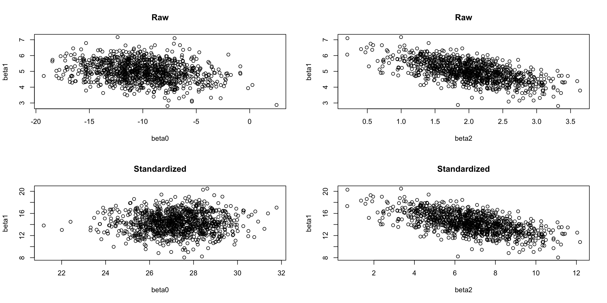

10 Special Topics
10.1 Standardizing \(X\)
Mean-Centering
Consider \(y_i = \beta_0 + \beta_1 x'_i\), where \(x'_i\) are the “centered” versions of \(x_i\): \[ x'_i = x_i - \bar x \]
Then \(\bar{x'} = 0\) and the coefficient estimates become: \[\begin{align*} \hat\beta_0 &= \bar y - \hat\beta_1\bar{x'} = \bar y\\ &\text{and}\\ \hat\beta_1 &= \frac{S_{XY}}{S_{XX}} = \frac{\sum_{i=1}^n(x_i' - \bar{x'})^2}{\sum_{i=1}^n(x_i' - \bar{x'})(y_i - \bar{y})} = \frac{\sum_{i=1}^nx_i'^2}{\sum_{i=1}^nx_i'(y_i - \bar{y})} \end{align*}\]
Mean-Centering and Covariance
For un-centered data: \[\begin{align*} V(\hat{\underline\beta}) &= (X^TX)^{-1}\sigma^2,\\ \text{where }(X^TX)^{-1} &= \frac{1}{nS_{XX}}\begin{bmatrix}\sum x_i^2 & -n\bar x\\-n \bar x & n\end{bmatrix} \end{align*}\] Note also that \(S_{x'x'} = \sum_{i=1}^n{x'}_i^2\), so \[\begin{align*} V(\hat{\underline\beta}^c) &= \frac{\sigma^2}{nS_{X'X'}}\begin{bmatrix}\sum {x'}_i^2 & 0\\0 & n\end{bmatrix}\\ & = \sigma^2\begin{bmatrix}n^{-1} & 0 \\ 0 & (\sum_{i=1}^n{x'}_i^2)^{-1}\end{bmatrix} \end{align*}\]
\(\implies\) no covariance!!!
Simulations with same data, but one uses centered data (code in L02 Rmd).
Standardizing \(\underline x\)
In addition to mean-centering, divide by the sd of \(\underline x\): \[ z_i = \frac{x_i - \bar x}{\sqrt{S_{XX}/(n-1)}} \]
Then \(\bar z = 0\) and \(sd(z) = 1 \implies S_{ZZ} = n-1\).
It can be shown that: \[ V(\hat{\underline\beta}^s) = \sigma^2\begin{bmatrix}n^{-1} & 0 \\ 0 & (n-1)^{-1}\end{bmatrix} \]
- \(\underline x\) doesn’t matter!!!
Standardizing in Multiple Linear Regression
Suppose we standardize each column of \(X\) (except the intercept).
Several things happen:
- All predictors are now in units of standard deviations!!!
- Coefficients are directly comparable!
- Covariances disappear!!!
Standardizing doesn’t hurt and can often help \(\implies\) it’s almost always worth it!
Possible downside:
- Have to “un-standardize” to interpret the results.
Standardization Example
Show the code
x <- mtcars$wt
y <- mtcars$mpg
coef(lm(y ~ x))(Intercept) x
37.285126 -5.344472 Show the code
# Standardize x:
x_prime <- (x - mean(x)) / sd(x)
coef(lm(y ~ x_prime))(Intercept) x_prime
20.090625 -5.229338 To get back our original estimates, we “un-standardize”. \[ y = \beta_0' + \beta_1'x' = \beta_0' + \beta_1'\left(\frac{x - \bar x}{sd(x)}\right) = \left(\beta_0' - \beta_1'\frac{\bar x}{sd(x)}\right) + \frac{\beta_1'}{sd(x)}x = \beta_0 + \beta_1x \]
Show the code
c(20.090625 - (-5.229338) * mean(x)/sd(x), -5.229338 / sd(x))[1] 37.285126 -5.344472Interpretations
- Raw: a one unit increase in \(x\) leads to a \(\hat\beta\) unit increase in \(y\).
- Slopes are in the units of the predictors.
- Assuming all other predictors are held constant.
- Standardized: a one standard deviation increase in \(x\) leads to a \(\hat\beta^c\) unit increase in \(y\)
- Slopes are all in the same units!
- Bigger coefficient \(\implies\) bigger effect on \(y\).
- Still assumes other predictors are held constant.
- Slopes are all in the same units!
Standardizing in R
Show the code
# Use the RHS of the model formula for mtcars
# But remove the column of 1s
X <- model.matrix(~ wt + disp + qsec, data = mtcars)[, -1]
X <- scale(X)
lm(mtcars$mpg ~ X)
Call:
lm(formula = mtcars$mpg ~ X)
Coefficients:
(Intercept) Xwt Xdisp Xqsec
20.09062 -4.92596 -0.01585 1.65587 Homework: recover the un-standardized coefficients.
Simulation Example
Show the code
n <- 50
x1 <- runif(n, 0, 10)
x2 <- runif(n, 0, 10) + 0.3 * x1
x1s <- scale(x1)
x2s <- scale(x2)
raw_ests <- matrix(ncol = 3, nrow = 1000)
std_ests <- matrix(ncol = 3, nrow = 1000)
for (i in 1:1000) {
y <- -10 + 5 * x1 + 2 * x2 + rnorm(n, 0, 10)
lm_raw <- lm(y ~ x1 + x2)
raw_ests[i, ] <- coef(lm_raw)
lm_std <- lm(y ~ x1s + x2s)
std_ests[i, ] <- coef(lm_std)
}
par(mfrow = c(2, 2))
plot(x = raw_ests[, 1], y = raw_ests[, 2],
xlab = "beta0", ylab = "beta1",
main = "Raw")
plot(x = raw_ests[, 3], y = raw_ests[, 2],
xlab = "beta2", ylab = "beta1",
main = "Raw")
plot(x = std_ests[, 1], y = std_ests[, 2],
xlab = "beta0", ylab = "beta1",
main = "Standardized")
plot(x = std_ests[, 3], y = std_ests[, 2],
xlab = "beta2", ylab = "beta1",
main = "Standardized")
In the plots above, the correlation between \(\beta_0\) and \(\beta_1\) has been removed, even though we get the same estimates!!!
Note, however, that the correlation between \(\beta_1\) and \(\beta_2\) has not changed at all. If you look closely, they are exactly the same, but with different scales. As a homework problem, you’ll show exactly what this change of scale is.
10.2 General Linear Hypotheses
Note that this section was skipped in class.
Diet vs. Exercise
Which is more important for weight loss?
We can set this up in a linear regression framework: \[ \text{Loss}_i = \beta_0 + \beta_1\text{CaloriesConsumed}_i + \beta_2\text{ExercisesMinutes}_i \] where we assume CaloriesConsumed and ExerciseMinutes are standardized.
Our question about the importance of diet versus exercise becomes a hypothesis test: \[ H_0:\; \beta_1 = \beta_2\text{ vs. }H_a:\; \beta_1 \ne \beta_2 \] Alternatively, the null can be written as \(\beta_1 - \beta_2 = 0\).
Linearly Independent Hypotheses
In some cases, we might have a collection of hypotheses. For ANOVA: \[ H_0:\; \beta_2 - \beta_1 = 0,\; \beta_3 - \beta_2 = 0,\; \beta_4 - \beta_3 = 0,\dots,\; and\; \beta_{p-1} - \beta_{p-2} = 0 \] These hypotheses are linearly indepenent. To see why, we can write them in matrix form: \[ \begin{bmatrix} 0 & -1 & 1 & 0 & 0 & ...\\ 0 & 0 & -1 & 1 & 0 & ...\\ 0 & 0 & 0 & -1 & 1 & ...\\ \vdots & \vdots & \vdots & \vdots & \vdots & ...\\ \end{bmatrix}\hat{\underline\beta} = \underline 0 \] where none of the rows are linear combinations of the others.
We’ll use the notation \(C\underline\beta = \underline 0\).
Linearly Independent Hypotheses
The \(C\) matrix can be row-reduced to the hypotheses \(\beta_i=0\;\forall i>0\). In this case, our hypothesized model is: \[ Y_i = \beta_0 + \underline\epsilon \]
We have reduced \(Y = X\underline\beta + \underline\epsilon\) to \(Y = Z\underline\alpha + \underline\epsilon\), where \(\underline\alpha = (\beta_0)\) and \(Z\) is a column of ones.
Linearly Dependent Hypotheses
Consider the model \(Y = \beta_0 + \beta_1x_1 + \beta_2x_2 + \beta_{11}x_1^2 + \underline\epsilon\) and the hypotheses: \[ H_0:\; \beta_{11} = 0,\ \beta_1 - \beta_2 = 0,\; \beta_1 - \beta_2 + \beta_3 = 0,\; 2\beta_1 - 2\beta_2 + 3\beta_3 = 0 \] We can write this as: \[ \begin{bmatrix} 0 & 0 & 0 & 1\\ 0 & 1 & -1 & 0\\ 0 & 1 & -1 & 1\\ 0 & 2 & -2 & 3 \end{bmatrix}\begin{bmatrix}\beta_0\\\beta_1\\\beta_2\\\beta_{11}\end{bmatrix} = \begin{bmatrix}0\\0\\0\\0\end{bmatrix} \] With a little work, we can show that this reduces to the model: \[ Y = \beta_0 + \beta(x_1 + x_2) + \underline\epsilon \Leftrightarrow Y = Z\underline\alpha + \underline\epsilon \]
Testing General Linear Hypotheses
Consider an arbitrary matrix for \(C\) (not linearly dependent), such that we can row-reduce \(C\) to \(q\) linearly independent hypotheses.
- Full Model
- \(SS_E = Y^TY - \hat{\underline\beta}^TX^TY\) on \(n-p\) df.
- Hypothesized Model
- \(SS_W = Y^TY - \hat{\underline\alpha}^TZ^TY\) on \(n-p-q\) df.
From these, we get: \[ \left(\frac{SSW-SSE}{q}\right)/\left(\frac{SSE}{n-p}\right) \sim F_{q, n-p} \] In other words, we test whether the restrictions significantly change the \(SS_E\)!
10.3 Generalized Least Squares
Main Idea
What if the variance of \(\epsilon_i\) isn’t the same for all \(i\)?
In other words, \(V(\underline\epsilon) = V\sigma^2\) for some matrix \(V\).
- The structure of \(V\) changes how we approach this.
- Weighted least squares: \(V\) is diagonal.
- Generalized: \(V\) is symmetric and positive-definite, but otherwise arbitrary.
Transforming the Instability Away
In the model \(Y = X\underline\beta + \underline\epsilon\), we want \(V(Y) = I\sigma^2\), but we have \(V(Y) = V\sigma^2\)
Since \(V\) is symmetric and positive-definite, we can find a matrix \(P\) such that: \[ P^TP = PP = P^2 = V \]
We can pre-multiply the model by \(P^{-1}\) so that \(V(P^{-1}Y) = V^{-1}V\sigma^2 = I\sigma^2\): \[ P^{-1}Y = P^{-1}X\underline\beta + P^{-1}\underline\epsilon \Leftrightarrow Z = Q\underline\beta + \underline f \]
Generalized Least Squares Results
\[\begin{align*} \underline f^T\underline f &= \underline\epsilon^TV^{-1}\underline\epsilon = (Y - X\underline\beta)^TV^{-1}(Y - X\underline\beta)\\ \hat{\underline\beta} &= (X^TV^{-1}X)^{-1}X^TV^{-1}Y\\ SS_T &= \hat{\underline\beta}^TQ^TZ = Y^TV^{-1}X(X^TV^{-1}X)^{-1}X^TV^{-1}Y\\ SST &= Z^TZ = Y^TV^{-1}Y\\ \hat Y &= X\hat{\underline\beta}\\ \hat{\underline f} &= P^{-1}(Y-\hat Y) = P^{-1}(I-X(X^TV^{-1}X)^{-1}X^TV^{-1})Y \end{align*}\]
Most things are just switching \(Y\) with \(P^{-1}Y\), etc., except one…
OLS when you should have used GLS
Suppose the true model has \(V(\underline\epsilon) = V\sigma^2\).
Let \(\hat{\underline\beta}_O\) be the estimate of \(\underline\beta\) if we were to fit with Ordinary Least Squares. Then:
- \(E(\hat{\underline\beta}_O) = \underline\beta\)
- \(V(\hat{\underline\beta}_O) = (X^TX)^{-1}X^TVX(X^TX)^{-1}\sigma^2\)
The OLS estimate is still unbiased, but has a much higher variance!
Choosing \(V\)
- For serially correlated data, \(V_{ii} = 1\) and \(V_{ij} = \rho^{|i-j|}\)
- This is choosing \(V\) based on model assumptions!
- \(\rho\) must be estimated ahead of time.
- If we have repeteated \(x\)-values, we can use the estimated variance from there.
- Choosing \(V\) based on the data
- In a controlled experiment, where we have known weights for different \(x\)-values
- E.g., more skilled surgeons, machine age.
10.4 Exercises
- Repeat (and verify)the “un-standardizing” process for multiple linear regression. Use the regression formula
mpg ~ disp + wt + qseccompared to the centered version to verify.- Use this to explain why the slopes are still correlated after standardizing.
- Verify that the predictions from a standardized linear model are the same as those for an unstandardized linear model.
- Explain in your own words why the correlation between the intercept and the slope disappears when mean centering.
- In general, show that a linear transformation of \(x\), i.e. \(x' \leftarrow a + bx\), results in a transformation of \(\beta_1\) as well as \(\beta_0\).
Comments on \(V(\hat{\underline\beta}^c)\)
\[ V(\hat{\underline\beta}^c) = \sigma^2\begin{bmatrix}n^{-1} & 0 \\ 0 & (\sum_{i=1}^n{x'}_i^2)^{-1}\end{bmatrix} \]